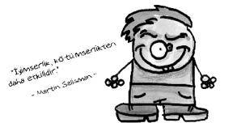

Martin Seligman (1942-)
Amerikan psikolog ve yazar. “Öğrenilmiş çaresizlik” kavramını ortaya atan kişi. İyimserliğe “pozitif psikoloji” adını vermiştir. Yetenek ve iyimserlik arasında önemli bir bağ olduğunu savunmuştur. Yani ona kısaca “Pembe Gözlüklü Seligman” da diyebiliriz.
Seligman’a göre düşündüğünüz şeyler davranışlarınızı belirler. Bu bağlamda iki temel eğilimden söz edilebilir: İyimserlik ve karamsarlık.
Karamsarlar: Genellikle başarısızlıktan davranışlarını değil de bizzat kendilerini sorumlu tutarlar. Başarısızlığı kalıcı görürler ve ne yaparlarsa yapsınlar değişmeyeceğini düşünürler. Bu da onların çare geliştirmek için yeni bir hamle yapmayı saçma görmelerine yol açar.
İyimserler: Genellikle başarısızlığı belli davranışlarıyla ya da koşullarla açıklarlar. Bu nedenle yaşanan başarısızlığı geçici ve yaşamlarının diğer yanlarını etkilemeyecek bir durum olarak görürler. Bu da onlara çare geliştirmek için hamle üzerine hamle yapma arzusu verir.

İyimserler, bir engelle karşılaşınca, büyük bir olasılıkla, direnirler. Karamsarlar ise, büyük bir olasılıkla, vazgeçerler.
Ne demiş Seligman…
• Geçen yüzyılda “uygunluk” ve “yetenek” akademik başarının anahtar sözcükleriydi. Ama ben, iyimserlik kavramı olmadan yeteneğin çok az şey ifade ettiği kanısına vardım.
• Merak ya da öğrenme isteği gibi zihinsel özelliklerin mutlulukla fazla ilgisi yoktur. Mutluluğu sağlayan, iyilik yapmak, değerbilirlik ve sevgi gibi insanî erdemlerdir.
Seligman deneyi...
Seligman da deneyinde yirmi dört tane köpek alır ve onları üç gruba ayırır. İlk gruba kaçış grubu der ve bunlara düğmeye bastıklarında kesebilecekleri bir şok uygular.
İkinci gruba boyunduruk grubu der, bu köpekler düğmeye bassalar bile şok kesilmez.
Üçüncü gruptaki köpekler ise kontrol grubudur ve herhangi bir şoka maruz kalmazlar.
Yirmi dört saat sonra tüm köpekleri kısa bir çitle iki bölmeye ayrılmış kapalı bir alana götürür ve köpeklere şok verir. Kaçış grubu ve kontrol grubu duvardan atlayıp şoktan kurtulmayı başarırken, boyunduruk grubu şoktan kurtulamaz.
Bu gözlemler bilişsel psikolojinin davranışçılığın yerini almasına neden olan bilimsel bir devrim başlatır. Yani davranışlarımızı düşündüğümüz şeyler belirler, sadece görünür bir ödül veya ceza değil!
Neymiş öğrenilmiş çaresizlik…
Çaresizlik öğrenilebilir mi? Evet maalesef çaresizlik öğrenilebilir ve öğrenmeye gayet kapalı olan bizler çaresizliği öğrenmeye gayet istekli ve bu konuda oldukça başarılıyızdır.
Peki, nedir öğrenilmiş çaresizlik? Kişinin kontrol edemediği (elinde olmayan) olumsuz olaylarla karşılaşmasıyla ortaya çıkan çaresizlik hali…
Ama bu sadece insanlar için geçerli değil. Mesela çekirgelerle yapılan bir deneyde çekirgeler kavanoza konuyor ve kavanozun kapağı kapatılıyor. Çekirgeler zıplıyor ve kafalarını kavanozun kapağına çarpıyorlar, bir daha ve yine aynı sonuç, bir daha ve yine aynı sonuç... Belli bir süre sonra çekirgeler artık kavanozdan kaçamayacaklarını anlayıp(!) zıplamaktan vazgeçiyorlar. Bunun üzerine kavanozun kapağı açılıyor ve kavanozdaki hiçbir çekirge zıplayıp kurtulamıyor.
Yine benzer bir deneyde büyük balıklarla küçük balıklar aynı akvaryuma konuluyor, fakat balıklar bir camla birbirinden ayrılıyor, tabi balıklar bunu göremiyorlar. Ne zaman büyük balıklar küçük balıkları yemek için diğer tarafa yönelseler cama çarpıyorlar.
Belli bir süre sonra cam çıkarılıyor ve aralarında nasıl bir sohbet geçiyorsa artık büyük balıkların cam olmadığı halde diğer tarafa gitmediği gözleniyor.
Örneğin;
– Tahsin Abi, sakın o tarafa gitme, yengeye rezil olursun.
– Niye ki oğlum?
– Abi biz gittik, bu şerefsizler büyü mü yaptırmış nedir diğer tarafa geçilmiyor.
– Yapma ya, zaten solungacı yere yakın olandan korkacaksın.
Biraz sonra...
Küüüüütttt!!!!....
– Tahsin Abi üç saniye önce ne dedim ben sana? Al işte gittin ne oldu? Karizma yerlerde!
– Ne, kim, ne zaman?
– Abi bırak şimdi bu balıkların hafızası üç saniye ayaklarını. Gittim çarpıldım, beynim sallanıyor demiyon da!..
Gibi…
Öğrenilmiş çaresizlik üzerine bin tane şey yazılabilir eğer bizim ülkemizde yaşıyorsanız, bin tane örnek verilebilir. Hatta buna öğrenilmiş değil “öğretilmiş” çaresizlik bile denebilir.
Devlet dairesinde sıra bekliyorsunuz, ilk gün sıra size gelmiyor.
İkinci gün yine sıra size gelmiyor.
Üçüncü gün tam sıra geliyor, mesai bitiyor.
Dördüncü gün sıra geliyor, imzanız eksik.
Beşinci gün gidiyorsunuz, imzayı atacak kişi izne çıkmış.
On beş gün sonra gidiyorsunuz, bugün git yarın gel diyorlar. Siz devamlı geliyorsunuz ama o beklenen “yarın” hiç gelmiyor. Böylece siz de o işten vazgeçip çaresizliği öğreniyorsunuz.
Ya da doktora gidiyorsunuz, karnınızın sağ alt tarafında bir ağrı var.
Doktor o gün izinli.
Ertesi gün gidiyorsunuz, film çektir diyorlar. Filmi çektiriyorsunuz.
Filmi üç gün sonraya alabilirsiniz diyorlar.
Üç gün sonra gidemiyorsunuz, çünkü apandistiniz patlıyor, ölüyorsunuz...
Bunun üzerine insanlar “Rahmetli Ahmet Abi gitti de ne oldu, hastanelerden gelemedi zavallı, bari evimde temiz temiz, huzurlu huzurlu ölürüm” deyip denemekten vazgeçebiliyorlar.
BİTMEZ...
Çaresizliği yenenler...
Çaresizliği yenebilmiş insanlar gerçekten bir şeyler başarabilmişlerdir.
Örneğin Victor Hugo yayın evlerinden kovulduğu için vazgeçip meşhur kitabı Sefiller’i çıkarmak yerine kendi sefil olabilirdi…
Edison ise, ampulü bulurken 999 kere hata yaptığını artık bulamayacağını söyleyen yardımcılarına, “Hayır, 999 kere hata yapmadım, 999 yapılmayacak şeyi bularak 999 kere doğruya yaklaştım.” demeyip bininci denemesinde ampulü bulamasaydı, belki biz hâlâ, “Her yer karanlık, makber mi Ya Rab!” diyor olacaktık…
Einstein aptal olduğu için(!) okuldan atıldı diye kendini Müslüm dinlemeye verseydi ne olacaktı?
Dostoyevski bir dönem kürek mahkûmu olmasaydı belki “Suç ve Ceza”yı yazamayacaktı.
Dünyaca ünlü en büyük müzisyenlerden olan Beethoven’in ise kulakları duymuyordu!
Velhasılıkelam sorunlar, engeller yöreye, ülkeye mahsus değil, evrensel! Önemli olansa vazgeçmemek, mücadele etmek!
Şimdi bu konuyu Behçet Necatigil’e ait bir mısrayla noktalamak da pek bir manidar olur. Ne demiş şair:
“Ya çaresizsiniz ya da çare, sizsiniz...”